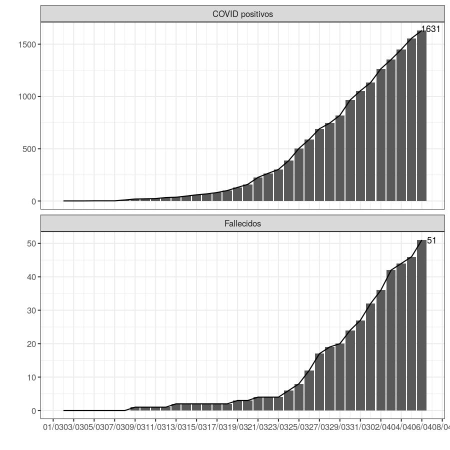

source("_site.R") # especificaciones globalessource('scripts/rates_global.R')## Warning in countrycode(country, origin = "country.name", destination = "iso3c"): Some values were not matched unambiguously: Diamond Princess, Kosovo, MS Zaandam
## Warning in countrycode(country, origin = "country.name", destination = "iso3c"): Some values were not matched unambiguously: Diamond Princess, Kosovo, MS Zaandam
## Warning in countrycode(country, origin = "country.name", destination = "iso3c"): Some values were not matched unambiguously: Diamond Princess, Kosovo, MS Zaandam
## Warning in countrycode(country, origin = "country.name", destination = "iso3c"): Some values were not matched unambiguously: Diamond Princess, Kosovo, MS Zaandam## Joining, by = "country"
## Joining, by = "country"## Warning: Removed 28 rows containing non-finite values (stat_smooth).## Warning: Removed 28 rows containing missing values (geom_point).## Warning: Removed 26 rows containing missing values (geom_smooth).## Warning: Removed 25 rows containing non-finite values (stat_smooth).## Warning: Removed 25 rows containing missing values (geom_point).## Warning: Removed 13 rows containing missing values (geom_smooth).source('scripts/rates_arg.R')## Warning: Missing column names filled in: 'X1' [1], 'X2' [2], 'X3' [3], 'X4' [4],
## 'X5' [5], 'X6' [6], 'X7' [7], 'X8' [8], 'X9' [9], 'X10' [10], 'X11' [11],
## 'X12' [12], 'X13' [13], 'X14' [14], 'X15' [15], 'X16' [16], 'X17' [17],
## 'X18' [18], 'X19' [19], 'X20' [20], 'X21' [21], 'X22' [22]## Sheet-identifying info appears to be a browser URL.
## googlesheets will attempt to extract sheet key from the URL.## Putative key: 1M7uDgWSfy6z1MNbC9FP6jTNgvY7XchJ0m-BfW88SKtQ## Worksheets feed constructed with public visibility## Accessing worksheet titled 'Sheet1'.## Warning: Missing column names filled in: 'X1' [1], 'X2' [2], 'X3' [3], 'X4' [4],
## 'X5' [5], 'X8' [8], 'X9' [9]## Warning: Duplicated column names deduplicated: 'Fecha' => 'Fecha_1' [17],
## 'Importados' => 'Importados_1' [18], 'Contacto estrecho / Conglomerado'
## => 'Contacto estrecho / Conglomerado_1' [19], 'Transmisión Comunitaria' =>
## 'Transmisión Comunitaria_1' [20], 'En estudio' => 'En estudio_1' [21], 'Total'
## => 'Total_1' [22]## Parsed with column specification:
## cols(
## .default = col_double(),
## X1 = col_character(),
## X9 = col_logical(),
## Fecha = col_character(),
## Fecha_1 = col_character()
## )## See spec(...) for full column specifications.Status COVID19 global 05 abr 2020

Factor de crecimiento: medida del progreso diario de nuevos casos

Argentina en relación a los paises limitrofes


Status Argentina al 05 abr 2020

Qué modelo ajusta mejor al progreso de infectados en Argentina?

Hasta el dia 21 del comienzo de la epidemia en Argentina ajustaba mejor el modelo exponencial, luego el modelo logístico es mejor que el exponencial.
Status en Sudeste de Buenos Aires
05 abr 2020
source('scripts/mapa.R')## Warning in st_centroid.sfc(muni$geometry): st_centroid does not give correct
## centroids for longitude/latitude data## Warning: Column `NAM` joining factor and character vector, coercing into
## character vector
## Que tipo de infección tenemos?
- importados: personas que volvieron del exterior habiendose contagiado afuera
- contactos: casos por transmisión de contactos estrechos de casos importados
- comunitarios/local: casos referidos como en estudio epidemiológico o sospechoso de comunitarios
<img src="plots/tipo_infeccion_ARG.jpg" width="600px">